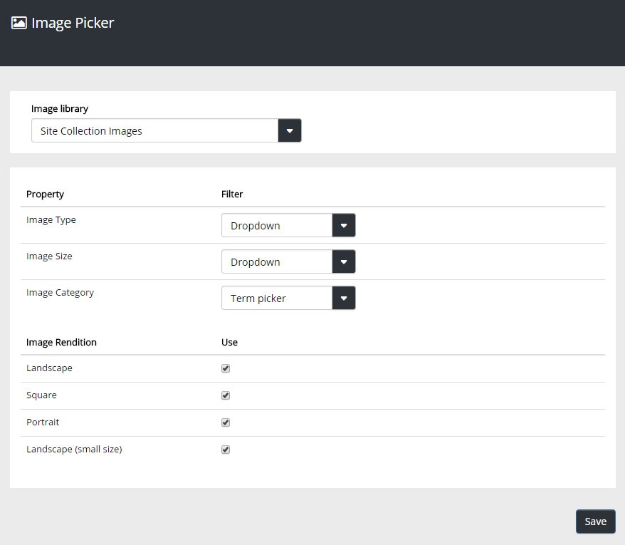

Image Picker Settings
Use this page to set which image renditions should be available in an image library, when an editor is using Quick Edit. If the library has any Managed Metadata type columns - you set which properties (metadata) should be available for filtering by the editors using the library.

- Image library: Select image library. Then available Managed Metadata columns (if any), and previous Image Rendition settings, will be shown.
- Property: If a property should not be available for filtering, select "None". If a property should be available for filtering, select type of list.
- Image Rendition: Select the image renditions that should be available in the image library.
(Don't forget to save your changes.)